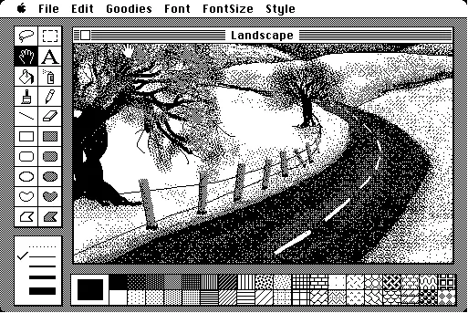
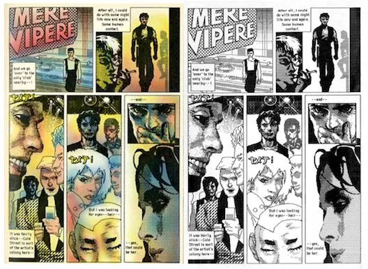
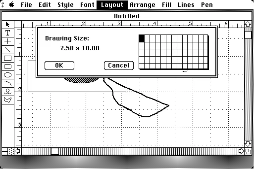
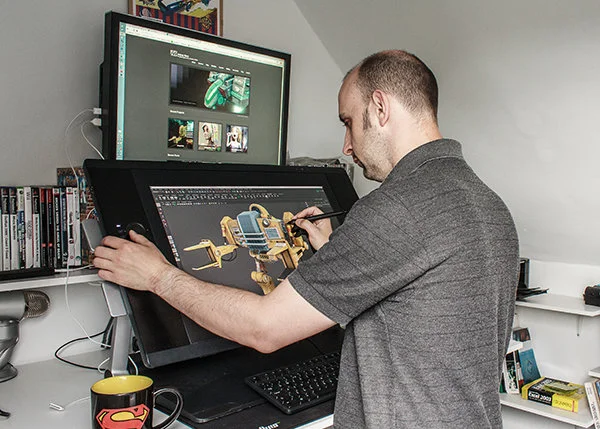
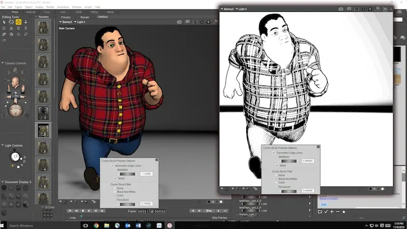

III. The Production Process
To destroy is always the first step in any creation.
- E. E. Cummings
For the purposes of this paper, it is instructive to compare the process used to create Shatter with the one most common in American comics of the 1980s, and then to set both against the process used today (2018). The comparison shows how far Shatter deviated from its contemporaries and lets us investigate how much of its production process survives in today's comic books.
The Typical Process in the 1980s
The writer typed the story and the script on a typewriter and sent them to the editor for review.
Once approved, the physical script went to the penciler, who sketched rough layouts of the 22 individual pages. These scribbles were much smaller than the original artwork or the printed page and served to work out the design. Then the penciler drew the actual pages (larger than the printed page, typically about one and a half times its size) with the figures, the props, and the background scenery or locations.
In some cases, the penciled pages were returned to the writer, who then provided the script for the captions, dialogue, and thought balloons. In other cases, the script already contained all the captions and dialogue when the penciler received it.
In the next stage, the letterer drew the caption boxes, speech bubbles, and thought balloons and then lettered the text into them.
As soon as the penciled and lettered pages were complete, they were sent to the inker, who redrew the penciler's art by tracing the lines, giving them weight, cleaning them up, and adding texture to the solids. The inker made sure that objects in the distance were drawn with a faint line and that closer objects or characters had the full weight they needed to tell the story.
Finally, the colorist applied colors and tones to the artwork by hand.
The pages of the comic book were then photographed for print and reduced to the desired size[13].

Figure 21: MacPaint on a monochrome Macintosh (ca. 1984).
The Process used for Shatter
The digital workflow of Shatter also started with the script. But as the series' editor, Mike Gold, described it in the editorial of Shatter Special #1, "... Peter would dialogue Mike's art on an Apple III, but it would be lettered on the Mac."
In Shatter #3, Gold continued his description of the process: "Virtually everything in Shatter, prior to the coloring phase, is generated as Apple Macintosh MacPaint computer files and then printed on an Apple Laserwriter."
And further, in the editorial of Shatter Special #1:
Together with First Comics' production manager Alex Said and editorial coordinator Rick Oliver, we agreed that every aspect of Shatter would be performed on the Mac - the art, the lettering, the logo, the advertising, even this editorial. Everything but the color. We could create the color on the Mac (and we could come up with some interesting effects by creating a wider range of tones) but it would take far too much time.

Figure 22: Interior story art from Shatter Special #1, colored (left) and before coloring (right).
The process used for Shatter thus saved the transcription of the script and the production of pencils to be inked, because the artwork was drafted directly on the computer. Coloring, the last step, still followed the established traditional workflow and saved no time.

Figure 23: MacDraw on a monochrome Macintosh (ca. 1985).
The Typical Process in 2018
Today, we need to distinguish between comic books produced by the "big two" commercial comic book publishers, Marvel and DC Comics (and, to a lesser extent, the next-largest publishers, Image and Dark Horse), and those produced by independent artists or groups of artists.
Commercial Comics
At the time of writing, the steps in creating a printed commercial comic book have not changed drastically since 1985, but the process is much faster. A writer writes the plot and the script and emails them to the editor, who makes any changes and forwards them to the artist.
This is where the paths diverge, because different artists work differently. Some still draw the artwork in pencil on art board and then either ink it themselves or pass it on to an inker to be embellished. Even artists who choose this analog path may use digital references or trace from printouts of digital sources. They might model difficult background shots in 3D software and then draw from this reference. In any case, the artwork is scanned and sent to the publisher as a digital file for further processing.
Two steps in the process have switched almost exclusively to digital: the lettering, including sound effects, and the coloring of the book.

Figure 24: An artist using a Wacom Cintiq 24"
(Source:
http://www.antcgi.com/2014/05/27/thoughts-on-the-wacom-cintiq-24hd/)
While much of the drawing for commercial comic books is still done by analog means, purely digital production is slowly prevailing in independent comics. Artists either draft their artwork directly on a screen using a Wacom tablet, Microsoft Surface, or iPad Pro, or they sketch on paper and refine their work digitally. Some use 3D software to render their characters, props, and backgrounds meticulously and then combine the components in paint or layout software.
That being said, commercial superstar artists such as DC co-publisher Jim Lee, one of the current Superman artists, and Green Lantern artist Ethan Van Sciver still pencil and ink their work[14].
Although exceptions exist, the mainstream process is to this day not fully digital: drafting and inking remain analog steps, while coloring and lettering are entirely digital. One reason for the pedantically segmented process in commercial comics is strict editorial control over every step. It lets the editor play gatekeeper and catch quality problems or any part of the commissioned work that might be inadequate or inappropriate. It also lets the editor follow the progress of the comic book from the first word written to the finished piece delivered to the printer.
Strangely, this only partially digital production process must end in a digital file that printers can handle. And although sales of physical comic books are dwindling in 2018, digital distribution through vendors such as comixology.com cannot yet compensate for the drop.
Independent Artists
Again, it is hard to generalize; there will always be artists who prefer traditional analog means. Some might not even use pencil and ink on paper but a completely different analog medium, such as oil on canvas, collage, or any of the many other techniques established over the centuries.
Independent comics artists often work alone or, at most, in a small team. Most have no support infrastructure, so they do more themselves. This is one reason why digital production is more common among independent artists.
Without editorial control, the process need not even start with a finished plot and script; it can begin with sketches that evolve into a complete story. For the sake of comparison, though, let us start an independent artist's digital process with the creation of the story (plot and possibly script). The artist might then produce thumbnail layouts of the pages to get an idea of the story's flow and the number of panels needed. This might be done on paper or, even at this stage, on the computer.
The digital artist then completes the remaining stages with digital tools. Outline art might be drawn much as before, with a sketch, a finer and more detailed rendering of it, and then a final cleanup. But artists who work digitally are not bound to the processes of physical media.
Once the outlines are rendered, the color art can be produced without delay and without a change of medium. Lettering and sound effects are added, and the page is done.
Purely digital pieces can be distributed over the web; those produced for print can be emailed to the printers for direct printing.

Figure 25: The Smith Micro application Poser allows artists to pose 3D characters and render them as ink drawings for use in their comics.
Comparing the Processes
By contrast, Shatter was limited by the means of communication available at the time: the disks with the digital materials had to be sent by conventional mail. Apart from this, the whole process was digital. The limitations of the printing presses made it necessary to produce a hard copy of the line art so that it could be photographed for the plate-based offset printing of the day. Coloring on a computer was not yet feasible on the machines available in 1985 and remained a task done by hand in the traditional way.
Footnotes
[13] Lee, S., & Buscema, J. (1978). How to Draw
Comics the Marvel Way. New York: Simon & Schuster Inc.
» Back [13]
[14] Ethan Van Sciver's YouTube channel:
https://youtu.be/uLKufn1IPcI
and
https://youtu.be/f4hSPJxN3nc
» Back (14)